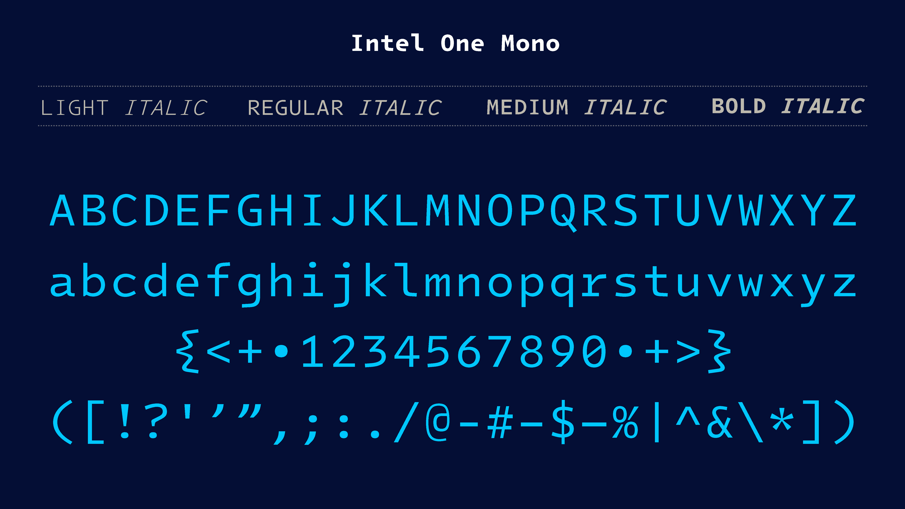

Introducing Intel One Mono, an expressive monospaced font family that’s built with clarity, legibility, and the needs of developers in mind.
Identifying the typographically underserved low-vision developer audience, Frere-Jones Type designed the Intel One Mono typeface in partnership with the Intel Brand Team and VMLY&R, for maximum legibility to address developers' fatigue and eyestrain and reduce coding errors. A panel of low-vision and legally blind developers provided feedback at each stage of design.
Intel One Mono also covers a wide range of over 200 languages using the Latin script. The Intel One Mono fonts are provided in four weights — Light, Regular, Medium, and Bold — with matching italics, and we are happy to share both an official release of fonts ready to use as well as editable sources.
To contribute, please see github.com/googlefonts/intel-one-mono.
